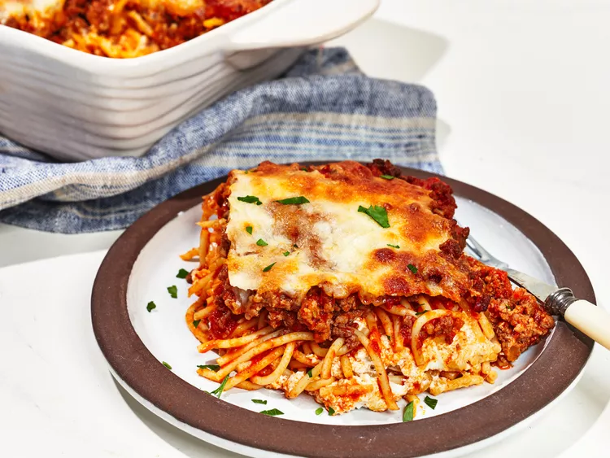

The Best Million Dollar Spaghetti

Description
The best million dollar spaghetti is surely this one a cheesy, meaty, marinara-sauced layered spaghetti casserole fit for a hungry crowd
Ingredients
- 1 tablespoon olive oil
- 1 small onion, finely chopped
- 1 1/4 teaspoons kosher salt, divided
- 2 cloves garlic, minced
- 1 pound ground sirloin
- 1 pound ground Italian sausage
- 32 ounces marinara sauce, divided
- 1/4 teaspoon salt
- 3 cups shredded mozzarella cheese, divided
- chopped parsley, for garnish
Steps
- Heat oil in a large saucepan over medium-high heat.
- Preheat the oven to 350 degrees F (175 degrees C).
- Bring a large pot of salted water to a boil.
- Combine cottage cheese, cream cheese, sour cream, remaining salt, pepper, and 1 cup mozzarella in a medium bowl and stir until well incorporated.
- Add half of pasta to the casserole dish
- Bake in the preheated oven until cheese is melted and browned and pasta is bubbling around the edges, 40 to 50 minutes.